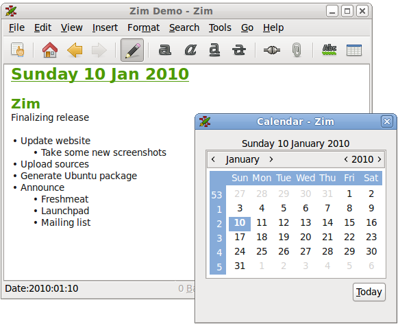
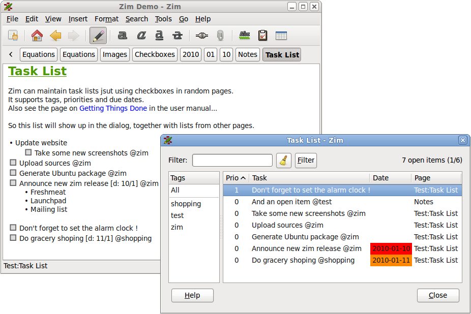

*Zim - A Desktop Wiki*
*Zim - A Desktop Wiki*
上次看见CherryTree ，我忍不住又上AlternativeTo 网站去看看有没有其它类似的软件 ，结果看到跨平台的树状笔记软件还有Zim, wikidPad，KeepNote和NoteCase这些个，其中Zim的受欢迎程度还挺高的，有88票(CherryTree只有16票)，于是下载下来试试。
试用了一阵，我就觉得这个软件还真是不错，跟CherryTree各有千秋:
- *富文本*: 跟CherryTree差不多，支持粗体/斜体/下划线/删除线、等宽/上标/下标、有序/无序列表/checkbox列表、1-5级标题，支持插入图片、链接，不过不支持设置字体颜色、中间对齐/右对齐；
- *所见即所得*: 虽然定位是desktop wiki，但跟WikidPad 不一样的是，它并不要求你记忆那些wiki语法 ，而是可以所见即所得地进行编辑（其实也可以输入wiki语法，然后用Ctrl-R强制Zim重新解析并显示）
- *附件*: 支持给每个页面添加附件（插入图片时可以选择是否拷贝到附件目录）
- *简单、清爽的存储方式*: 存储采用纯文本(采用dokuwiki语法)，每个页面一个文件，导航数上面的枝节点（叫做namespace）变为一个目录，每个页面附件也存放在各自的目录里（跟页面同名）——这就使得没有Zim时也可以简单地查看/修改内容了，也可以很方便地用其它工具来导入/导出（包括格式转换）
- *导出*: 它的导出功能很强大，因为可以定制模板 ，比如将笔记本导出为HTML时，缺省就提供了独立索引页(Default)、每个页面有索引(Default_with_index)、演示(Presentation)、幻灯片(SlideShow S5)等多种模板；
还可以导出为Latex和Markdown格式；
- *带一个Web Server*: 这是一个很酷的功能，从菜单上点一下就可以启动一个Web Server，可以通过浏览器当前笔记本，zim自动提供转换后的html页面
- 其它功能
- *记笔记*: 除了所见即所得的编辑功能，还提供了两个插件:
- *写文档*: 尤其适合写多章节的说明文档，然后导出为markdown/html，或者通过latex生成pdf。Zim自己的帮助和项目网站 （页面右下角有: This website was written in Zim !)都是用Zim写的；
- *写演示胶片*: 导出时选择Presnetation或者SlideShow S5就可以啦；
- *记日记*: 日历插件(Calendar) 可以显示一个日历，选择相应日期就跳转到当天的笔记，也可以在主界面用快捷键Alt-D快速跳转/创建今天的笔记；

- *GTD*: 任务列表插件(Task List) 可以帮助你跟踪待办事项：带有TODO和FIXME标签(Tags)的页面会变成一个任务项；更细节的待办事宜可以用带有复选框(checkbox)的列表来跟踪（用缩进来代表子项目）

参考: Zim自己的文档里有一篇Usage 描述了各种应用场景:
所以，这完全是个普通人的org-mode了：所见即所得地编辑，也能干很多事情。
不过，对于我自己，我还是会继续在Emacs上用org-mode，因为各种熟悉，各种定制，各种小功能（比如导出为INFOJS、Markdown...）
# -*- encoding:utf-8 -*-
| globe.png | 20.3kb | |
| zim-calendar.png | 57.2kb | |
| zim-normal.png | 65.6kb | |
| zim-tasklist.png | 101kb |
{kind=link}
{kind=link}
{kind=link}